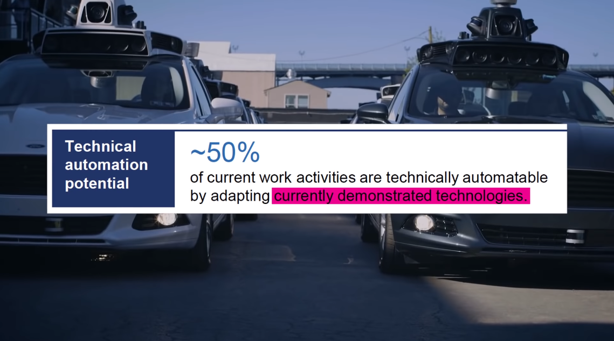

Gần đây mình có đăng một đoạn video trên Facebook cá nhân về một phương tiện giao hàng độc đáo mà Amazon thử nghiệm để có thể triển khai trong một tương lai không xa. Đoạn video thể hiện hình ảnh một khinh khí cầu khổng lồ mang trong mình rất nhiều máy bay giao hàng không người lái đã gây xôn xao trên các mạng xã hội, cho thấy những gì mà một người dùng mô tả trong phần bình luận, là một thực tế có thể xảy ra trong tương lai.
Trên thực tế, Amazon đã thử nghiệm giao hàng bằng máy bay không người lái (drone) trong một thời gian dài tại phòng lab R&D của gã khồng lồ bán lẻ, với ý tưởng ban đầu về tương lai của dịch vụ giao hàng Prime Air từ năm 2013. Video trên được chia sẻ 17.000 lần và nhận hơn 52.000 lần yêu thích trên Twitter, thực chất là một trò đùa trong rất nhiều nội dung phi thực tế khác nhân ngày Cá tháng Tư hôm thứ Hai tuần trước. Đoạn clip được tạo nên bởi một nghệ sĩ người Nhật, và được cho là đã lấy cảm hứng từ một phương tiện bay thử nghiệm của hãng Lockheed Martin có tên là P791, tuy nhiên khái niệm này không quá xa vời như chúng ta nghĩ.
Thật ra, Amazon đã từng xin cấp bằng sáng chế do một dịch vụ vận chuyển hàng hóa bằng thiết bị không người lái được thực hiện bởi một trung tâm điều khiển trên không từ năm 2014. Ý tưởng này đã được phê duyệt sau đó thể hiện quá trình giao hàng bằng các máy bay nhỏ không người lái đến tận tay người mua hàng và quay trở lại tàu mẹ để di chuyển đến một địa phường khác và lặp lại quy trình giao hàng trên. Việc bằng sáng chế này được trao cho Amazon chứng mình rằng tất cả những điều này có thể trở thành hiện thực và với sự phát triển gần đây của công nghệ hàng không và phần mềm tự động hóa, ai dám nói rằng ngày điều đó xảy ra không còn xa. Amazon có thể sẽ mất rất nhiều thời gian để vượt qua các quy định khắt khe để có thể đưa vào hoạt động những phương tiện giao hàng trên từ các cơ quan hàng không nhưng không gì là không thể.
Ví dụ trên của của Amazon hay đoạn video về chiếc xe tải tự lái dưới đây nhìn cũng khá thích thú phải không?
Waymo - là một công ty phát triển công nghệ xe tự lái có nguồn gốc từ một dự án của Google trước khi nó trở thành một công ty con độc lập vào tháng 12 năm 2016- tại thời điểm hiện tại đang thử nghiệm xe đầu kéo tự động ở Atlanta Hoa Kỳ. Chiếc xe tải có tên là Einride này, bạn có thể thấy đó là nó người tài xế ngồi sau vô-lăng không có bất kỳ tác động nào lên chiếc xe để vận hành nó. Mặc dù chưa có thông tin gì về kế hoạch triển khai trong tương lai gần, nhưng khi những phương tiện này có mặt trên đường, giá cước dành việc vận chuyển sẽ rẻ hơn đi rất nhiều.
Và khi điều này diễn ra cũng đồng nghĩa với việc, hàng triệu người lái xe tải ngay lúc này sẽ phải tìm kiếm cho mình một công việc mới. Mà gượng đã, nó không chỉ diễn ra với tài xế lái xe tải đường dài đâu. Theo công ty tư vấn nổi tiếng toàn cầu McKinsey, trong một báo cáo gần đây của họ ước tính rằng khoảng một nửa số công việc mọi người đang làm hiện tại có thể được thay thế bởi tự động hóa và công nghệ mà nhân loại đang sở hữu.

Và trong báo cáo tương tự, McKinsey cũng chỉ ra rằng, từ nay đến năm 2030, sẽ có khoảng 400 triệu công nhân trên toàn thế giới mất việc vì sự chuyển dịch sang mô hình tự động hóa.
Đây không phải là vấn đề về việc máy tính trở nên thông minh hơn con người. Đây là một sự thay đổi sâu sắc trong cách vận hành của nền kinh tế. Và nó không thật sự xấu như các bạn nghĩ. Hãy cùng mình thảo luận trong bài viết này nhé.
The Big Picture - Bức Tranh Toàn Cảnh
Những gì đang xảy ra với hoạt động vận chuyển bằng xe tải đường dài là điều đã xảy ra tương tự với Cửa hàng cho thuê băng đĩa, Đại lý du lịch, Nhân viên thu ngân của cửa hàng tạp hóa và hàng tá công việc khác. Họ đã bị thay thế, bởi một phần mềm, có nghĩa là mô hình lao động đầu tiên không tiết kiệm bằng mô hình sau này.
Và tất cả những bản sao của các công việc từng yêu cầu con người trực tiếp vận hành nay cơ bản có thể gọi là miễn phí.
Chi phí cận biên bằng 0
Trong thế giới kinh doanh, họ gọi đây là Zero Marginal Cost, hay Chi phí cận biên bằng 0, có nghĩa là bạn có thể tăng thêm khách hàng và doanh thu mới mà không phải tăng thêm bất cứ chi phí nào. Để hiểu hơn về cách mà nó vận hành, mình sẽ lấy ví dụ về cách mà chúng ta chia sẻ hình ảnh.
Trong hầu hết những năm của Thế kỷ 20, Kodak là cái tên lớn nhất trong ngành nhiếp ảnh. Nhưng công ty này không thể tồn tại trong thời kỳ mà điện thoại thông minh lên ngôi. Kodak đã nộp đơn xin phá sản vào năm 2011, chỉ bốn năm sau khi iPhone đầu tiên ra mắt.
Ngày nay, thay vì phải sản xuất hàng triệu cuộn phim, chúng ta chỉ cần sử dụng một ứng dụng trên smartphone.
Instagram là một ứng dụng tốt và không quá phức tạp để sử dụng. Và không phải cứ ném thật nhiều tiên qua cửa sổ để thuê hàng ngàn lập trình viên về thì ứng dụng này sẽ ngày một tốt hơn. Vào thời kỳ đỉnh cao của mình, Kodak đã tuyển dụng đâu đó khoảng 145.000 nhân công, trong khi con số này với Instagram là khoảng … 500.
Và một điều thú vị nữa, đó là Instagram được định giá cao hơn nhiều so với Kodak ngay cả khi hãng này đang ở vào thời kỳ đỉnh cao.
Vậy điều gì đã xảy đến với tất cả số công việc đó? Sự thay đổi mà các bạn nhìn thấy không phải đến từ một con rô bốt chế tạo phim chụp ảnh siêu tiên tiến có thể thay thế được năng suất của con người. Chúng ta chỉ không sử dụng phim chụp ảnh nữa mà thôi. Rõ ràng không phải chuyện rô bốt thay thế con người, mà chủ yếu đến từ mô hình kinh doanh với Chi phí cận biên bằng 0 đã làm thay đổi những ngành công nghiệp cũ.
Mọi người đều đã tranh luận rất nhiều về việc điều này tốt cho kinh doanh và xấu cho người lao động. Nếu bạn là một người bi quan, có vẻ như đây là kết thúc cho những công việc như mình đã đề cập ở trên. Tất cả các công ty có số lượng nhân công cao như Kodak đã thua trong cuộc chơi với các công ty công nghệ thông minh có quy mô nhỏ hơn rất nhiều. Năng suất được cải thiện trở nên hiệu quả hơn. Của cải được tập trung hơn. Và tỷ lệ mất việc tăng tới nóc.
Nhưng nếu những người bi quan nhìn thấy một tương lai ảm đạm không có việc làm, những người lạc quan ngược lại lại nhìn thấy một tương lai với công việc vô cùng nhẹ gánh.
“Công nghệ sẽ làm giảm bớt thời gian cho những công việc bắt đầu từ 9 giờ sáng và kết thúc vào 5h chiều trong tuần”
Đó là phát biểu của tỷ phú nổi tiếng Richard Branson tại sự kiện Big Think diễn ra tháng 12 năm 2018
Trước đây, phải mất rất nhiều thời gian và nhân lực để thực hiện một cuộc gọi taxi hoặc vận chuyển một thứ gì đó đến nhà của bạn (bạn gọi tổng đài => gặp nhân viên trực tổng đài => tổng đài viên ghi lại địa chỉ và yêu cầu của bạn => tổng đài viên gọi cho tài xế và thông báo về yêu cầu của bạn => tài xế đến đón bạn hoặc giao đồ theo yêu cầu của bạn). Nhưng bây giờ mọi thứ tiện lợi hơn nhiều với các dịch vụ đặt xe qua ứng dụng. Các doanh nghiệp tìm ra cách để có thể phục vụ được một lượng lớn người sử dụng cùng lúc với một khoản đầu tư trực tiếp duy nhất. Và sự hiểu quả trong sử dụng đồng vốn đó làm cho giá thành của các dịch vụ giảm đi rất nhiều. Một số người nhìn vào quá trình đó và tưởng tượng nên một xã hội mà ở đó sự tự động hóa làm cho mọi thứ rẻ đến mức gần như miễn phí. “Thất nghiệp công nghệ“ có thể được bù đắp bằng chi phí sinh hoạt rẻ hơn nhiều cũng như các chương trình xã hội, như Thu nhập cơ bản chẳng hạn.
Chủ nghĩa Xã hội xa xỉ hoàn toàn tự động hay Chủ nghĩa Phát xít tiên tiến về công nghệ?
Người ta có thể cho bạn một xã hội viễn tưởng kiểu Liên hiệp vũ trụ các hành tinh kiểu Star Trek nhưng bạn cũng có thể nhận được một xã hội viễn tưởng bị thống trị và chi phối bởi một tập đoàn kiểu Tyrell Corp. trong Blade Runner.
Mình nói vui vậy thôi, chứ thực tế là mình cảm thấy là mọi người đang quá hào hứng về ý tưởng này. Đôi khi là hào hứng thái quá. Nhưng thực tế là xã hội đó còn khá là xa vời với thế giới của chúng ta hiện tại. Hấu hết những lợi ích mà các phần mềm ở quy mô toàn cầu mang lại cho con người đều chỉ có lợi cho những ông chủ hoặc những người đang nắm giữ cổ phần ở những công ty công nghệ lớn như Facebook hay Google. Nó vẫn chưa chạm tới những vẫn đề như nhà ở, chăm sóc sức khỏe, và giáo dục, nơi mà phần đông dân số thế giới dành rất nhiều chi phí để duy trì. Và những khoản chi phí ấy đang ngày một tăng.
Dù cho bạn có hoán đổi việc trả cước hàng tháng cho dịch vụ cáp truyền hình với một tài khoản Netflix cũng không làm cho bài toán chi phí gia đình thay đổi quá nhiều. Và nếu chúng ta không “tất tay“ chọn con đường đi dến Chủ nghĩa Xã hội xa xỉ hoàn toàn tự động, thì chúng ta vẫn có thể sử dụng các chính sách thuế lũy tiến để bổ sung thêm ngân sách cho giáo dục đại chúng và chăm sóc sức khỏe cộng đồng cơ mà.
Chỉ có điều, chúng ta phải thừa nhận rằng đang có vấn đề với tốc độ thay thế quá nhanh của phần mềm với những công việc trước giờ đòi hỏi sức lao động của con người.
Cảm ơn các bạn đã dành thời gian đọc bài viết của mình, nhớ bookmark trang của mình để cập nhật những bài viết sắp tới về thế giới khoa học và công nghệ thay đổi không ngừng.